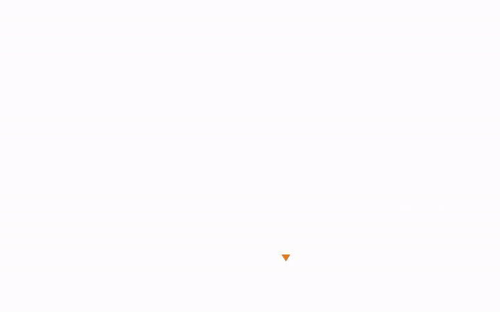

Presentación de estudio
El proyecto completo explicado hasta el nivel técnico: fundamentos de Active Directory, el modelo de grafo, cada algoritmo y la implementación, con animaciones en video.
Abrir la presentación
Proyecto final de Matemáticas Discretas
Un entorno ficticio de Active Directory convertido en un grafo dirigido, donde una arista A → B significa que quien controla A puede llegar a controlar B. Con algoritmos clásicos de teoría de grafos se encuentran las rutas que llegan al núcleo del dominio y, con el teorema de flujo máximo y corte mínimo, se calcula el conjunto más pequeño de accesos que hay que revocar para cerrarlas todas. Cada algoritmo está escrito desde cero en Python, sin dependencias externas.
Empieza aquí
El proyecto completo explicado hasta el nivel técnico: fundamentos de Active Directory, el modelo de grafo, cada algoritmo y la implementación, con animaciones en video.
El grafo real en el navegador: elige un objetivo, ejecuta BFS, Dijkstra o el plan de defensa y sigue cada paso del algoritmo con el reproductor. Funciona sin servidor y sin instalar nada.
Animaciones
Cuatro de las animaciones de la presentación: el problema, dos algoritmos y la solución.
EXECUTE_DCOM), donde tiene sesión PingFrankel165 (HAS_SESSION), miembro de DOMAIN ADMINS (MEMBER_OF). Tres saltos y peso 8: el camino de menor esfuerzo.
Contenido
Usuarios, equipos, grupos, GPO, OU y el dominio como vértices; 16 tipos de acceso como aristas dirigidas.
BFS y DFS para saber qué controla un objeto, y BFS sobre el grafo inverso para saber quién llega a un objetivo.
Dijkstra con un montículo y pesos por tipo de acceso, frente al camino de menos saltos.
Componentes fuertemente conexas con Tarjan, grafo condensado y cerradura transitiva con Warshall y mapas de bits.
Centralidad de intermediación con Brandes y vértices de corte que están en toda ruta hacia el objetivo.
Flujo máximo con Edmonds-Karp, corte mínimo y teorema de Menger: el plan más pequeño posible, verificado con un nuevo recorrido.